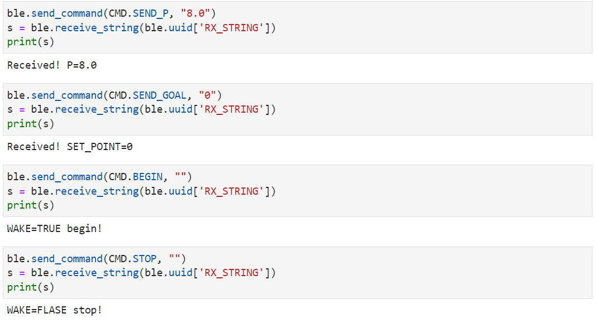
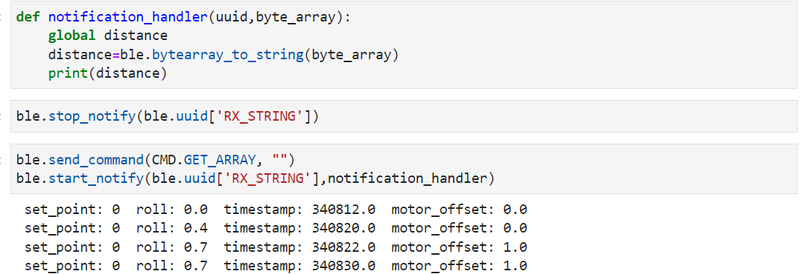
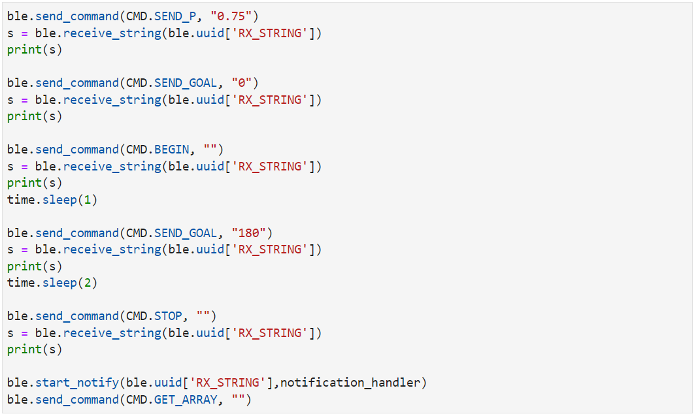

Maintain a Constant Orientation
In this lab, I used PID CONTROL to maintain the car in set orientation. For the first part, I implemented a controller maintaining a constant orientation even when the robot is kicked. For the second part, the car was able to move forward until a new orientation, such as 180 degrees, was sent, then turning and driving towards that direction. Here are the process and details of my experiment.
Parts Required
1 x R/C stunt car
1 x SparkFun RedBoard Artemis Nano
1 x USB cable
2 x Li-Ion 3.7V 400 mAh (or more) battery
2 x Dual motor driver
2 x 4m ToF sensor
1 x 9DOF IMU sensor
1 x Qwiic connector
Part1: Stationary Car
Debugging Data
To get the data feedback, I created a struct named debugData,
storing the setpoint, current roll angle, angle error, timestamp and the motor offset.
struct debugData{
int setpoint;
float angle_roll;
float error;
unsigned long timestamp;
int motor_offset;
};
The size of the debugData is 16 bytes. A debugDate array is used to record all the information.
Here, the array size is 1000 and will take up 16 kB memory.
const int MAX_DATA_SIZE=1000;
debugData datas[MAX_DATA_SIZE];
Bluetooth Commands
As shown in below, I created several Bluetooth commands to conrtol the robot.
enum CommandTypes
{
BEGIN,
STOP,
SEND_P,
SEND_GOAL,
GET_ARRAY,
PING,
};
The robot controller will start and stop once BEGIN and STOP commands are sent to the Artemis over Bluetooth.
KP value is able to change by the executing ble.send_command(CMD.SEND_P, "1"), so that I can update the gains without reprograming the Artemis.
Similarly, SEND_GOAL is used to set the orientation.

Once the Artemis received the commandGET_ARRAY, function write_data() will be called
and start to send debugging datas to the computer.
Thanks for the ESTRING.h, the recorded datas can be converted into ESTRING datatype and be sent over bluetooth.
Here is the related code.
write_data()
{
for(int i=0; i < datas_index; i++){
tx_estring_value.clear();
tx_estring_value.append(" setpoint: ");
tx_estring_value.append(datas[i].setpoint);tx_estring_value.append(" ");
tx_estring_value.append(" roll: ");
tx_estring_value.append(datas[i].angle_roll);tx_estring_value.append(" ");
tx_estring_value.append(" error ");
tx_estring_value.append(datas[i].error);tx_estring_value.append(" ");
tx_estring_value.append(" timestamp: ");
tx_estring_value.append(float(datas[i].timestamp));tx_estring_value.append(" ");
tx_estring_value.append(" motor_offset: ");
tx_estring_value.append(float(datas[i].motor_offset));tx_estring_value.append(" ");
tx_characteristic_string.writeValue(tx_estring_value.c_str());
}
}

PID control
I implemented the PID control in the main loop.
Once the BEGIN command is sent the PID control will begin.
The Artemis will get the gyroscope data, calculate the roll angle and motor offset if the IMU sensor data are ready.
Otherwise, it will just skip all those things.
if(WAKE && datas_index < MAX_DATA_SIZE){
if (myICM.dataReady()){
// get angle(roll) from the gyro and time
myICM.getAGMT();
datas[datas_index].timestamp=millis();
if(datas_index!=0){
float dt;
dt=(float)(datas[datas_index].timestamp-datas[datas_index-1].timestamp)*0.001;
float wx;
wx=myICM.gyrX();
datas[datas_index].angle_roll=datas[datas_index-1].angle_roll+wx*dt;
}
else{
datas[datas_index].angle_roll=0;
}
// Using PID to control the motors
datas[datas_index].setpoint=SETPOINT;
float error;
error=datas[datas_index].angle_roll-SETPOINT;
int motor_offset;
motor_offset=P_value*error;
if(abs(motor_offset)>255)
motor_offset=255*(motor_offset/abs(motor_offset));
datas[datas_index].motor_offset=motor_offset;
motor_control(motor_offset);
datas_index++;
}
}
Part2: Mobile Car
In this part, the car is going to move forward until a new orientation, such as 180 degree, is sent, then turning and driving towards that direction.
Motor Control
To control the orientation when the car is moving at a set base speed, the motor control is a little more complicated than the previous one. Given that my experiment space is not so large, the base speed can not be very high. I used the speed at 25% duty cycle as the base speed, i.e., the analog value is 63. Similarly, the input analog value should be less than 255. Thus, I limited the maximum offset to be 255-SPEED_BASE. Additionally, if the final input analog value is negative, speed is going to be set to the backward pins instead. Here are related codes for the offset and motor control.
// motor offset
if(abs(motor_offset)>(255-SPEED_BASE))
motor_offset=(255-SPEED_BASE)*(motor_offset/abs(motor_offset));
datas[datas_index].motor_offset=motor_offset;
//right motor: SPEED_BASE+motor_offset
if(SPEED_BASE+motor_offset>0)
analogWrite(RightFoward, SPEED_BASE+motor_offset);
else
analogWrite(RightBack, abs(SPEED_BASE+motor_offset));
// left motor: SPEED_BASE-motor_offset
if(SPEED_BASE-motor_offset>0)
analogWrite(LeftFoward, SPEED_BASE-motor_offset);
else
analogWrite(LeftBack, abs(SPEED_BASE-motor_offset));
Test Results
In the jupyter notebook, I used the following code to send commands and get debugging data. The set orientation is zero at the beginning and the car will move forward for one second. Then the setpoint will be changed to 180 degrees by the command. The car will stop after two seconds and receive the debugging data arrays.

I used the P control first. When KP is larger than 0.8, the car will drift more than 180 degrees. However, the feedback roll angles are around 180 degrees and thus the motor offset is small and the car keeps moving forward instead of adjusting orientation. I guess this is because the car turns too fast and the gyroscope misses something. I tried smaller KP but found another problem. For example, when I set the KP to be 0.75 or less, the gyroscope is able to get right angles. However, in such a situation, the motor offset is not big enough to make the car change orientation. For example, when the roll angle is 190 degrees, the motor offset will be KP * error = 0.75 * 10 = 7.5. My car will go straight with such offset. I guess it is related to the coasting mode. In the last lab, I tested the deadband of the motors and found that when just one motor was spinning at a low speed, the car was able to move straight on the ground. Unfortunately, I haven't figured out a good solution to this problem. Probably adding a D control and using Kalman Filter to get the roll angle will help. Here is the demo video.Posted by Lanyue Fang on Mar 14, 2022